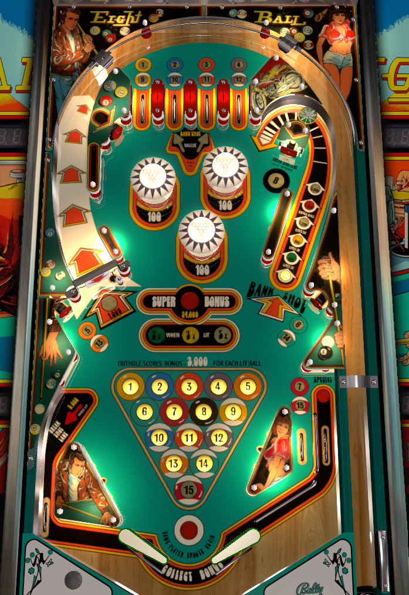

Go for pool balls. Each pool ball is worth 3,000 base bonus, and bonus is most of your scoring in this game. Bonus X is collected on the Bank Shot. The 8 ball target in the top right lights the left kickback and the spinner; using the kickback unlights both. Be warned that this game plays fast and that the left out lane is one of the hungriest in all of pinball.
Each lane is worth 500 points, and lights a pool ball when lit. When all of 1 through 4 are completed, an arrow will point at either the 2 or 3 lane and alternate with each switch hit. Going through the lit lane scores and advances the value of the Bank Shot (see below).
Under some settings, especially on 3 ball play, the 1 and 4 lanes will be tied together, and the 2 and 3 lanes will be tied together as well, meaning going through one gives credit for both.
Sometimes referred to as a candy cane due to its shape. The value is scored and advanced by the star rollover at the back of the lane's curve, or by the lit top lane if the 1-4 balls have been collected. In order the Bank Shot gives: 300 points, 600 points and 2X bonus, 900 points and 3X bonus, 1,200 points and 5X bonus, 1,500 points and extra ball, and finally 5,000 points. (Under some settings, the 300 is skipped, so the first shot gives 600 points and 2X bonus straight away.)
Extra balls award 15,000 points when extra balls themselves are off.
This shot is absolutely worth going for, at least until 5X bonus is lit.
The 5 ball is on the left, just below the spinner. The 6 ball is on the right, just below the mouth of the Bank Shot. Both can be a little finnicky to hit, but can be shot at from a trap on the opposite flipper.
The 7 ball is on the right in lane. In lanes don't happen naturally very often in this game, barring a strong nudge off the side wall above the right out lane. If somehow the ball is trapped up on the left, the 7 can be scored with an alley pass. Regardless, it's probably the hardest pool ball to collect.
Regardless of whether it is lit or not, the 8 ball target gives 500 points and lights both the spinner and the left kickback. If the left kickback is used, both the spinner and the kickback unlight, and need to be relit at the 8 ball target again.
If all the other pool balls 1-7 have been collected, the 8 ball is lit. Hitting the 8 ball completes the rack and lights Special on the right out lane (which is worth 15,000 points if not a free game). No more pool balls or bonus can be collected on the current ball in play once the 8 is hit, but on the next ball, the 24,000 super bonus is lit and all pool balls unlight to be recollected. Just like the regular pool balls, the super bonus is affected by bonus X.
When not lit, the spinner gives a measly 10 points a spin. If not lit, the spinner should not be a priority in any capacity other than as a way to get back to the top of the table to collect more top lane pool balls.
The spinner is lit by hitting the 8 ball target, and is worth 1,000 points per spin when lit, which can be very significant if the spinner is well lubed. The spinner can be unlit if the left kickback is used.
If the spinner lane is hit but not hard enough to send the ball back up to the top lanes, the reject can usually be saved in some fashion by the left flipper.
Because of its size, its funnel shaped mouth, and the angle of the wall immediately above it, the left out lane is one of the hungriest and most difficult in all of pinball. Be on alert any time the ball hits the right slingshot or is moving vaguely down-left coming out of the pops.
Hitting the 8 ball target lights a one time kickback in this lane. Using the kickback scores 5,000 points and unlights both itself and the lit spinner. Do note that on some Eight Ball machines, if the game plays fast enough or the kickback is relatively weak, the kickback may not actually get the ball all the way back into play from the out lane. Know whether this is a possibility on your machine and what to do if it happens.
Bonus makes up a very significant portion of scoring in this game. Be very mindful of how much game movement you can get away with so that you don't tilt away many thousands of points.
Each ball is worth 3,000 points times the bonus multiplier. If a 1-8 rack is completed on a ball, then beginning with the next ball, the 24,000 super bonus is lit and more balls can be collected toward the bonus.
Base bonus builds over the course of the whole game, but bonus multiplier does not.

All copyrighted names and terms in this document belong to their respective owners. The information provided in this document is for educational purposes only and no infringement is intended.
Back to top To game list To main page